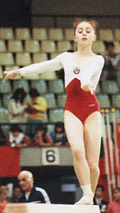

Eka Zeturidze (USSR)
1985 Riga International AA Champion

Eka was born on October 28, 1968, in Tblisi and trained at Dynamo.
Competition Results
1982 1983 This page was created on August 23, 2020 and was last updated on May 16, 2026.
Jr. USSR Championships: 3rd AA, 2nd V
Children's and Youth School of Olympic Reserves Championships: 1st AA
Georgian Spartakiade: 1st Team, 3rd AA, 3rd V, 3rd FX
1984
All-Union Dynamo Championships: 3rd AA, 1st B
Jr. GDR-USSR Dual Meet: 4th AA
USSR Championships: 19th AA, 4th FX
USSR Cup: 2nd FX, 4th V
1984 Schools Spartakiade: 11th AA
1985
Chunichi Cup: 4th AA, 2nd V, 3rd UB, 6th B, 8th FX
Riga International: 1st AA, 1st V, 2nd UB, 2nd FX
Tokyo Cup: 1st V, 4th FX
USSR Cup: 7th AA, 2nd V, 3rd FX
1986
USA-USSR Dual Meet: 1st Team, 1st AA
USSR Championships: 2nd AA
USSR Cup: 8th AA, 1st V
USSR Spartakiade: 4th Team, 1st V
1987
DTB Cup: 9th AA, 6th FX
University Games: 1st Team, 4th AA, 3rd B
USSR Championships: 7th Team, 19th AA
USSR Cup: 7th V
1988
Moncada Cup: 5th AA
USSR Championships: 18th AA
USSR Cup: 23rd AA
© Gymn Forum